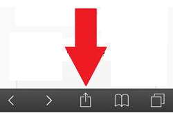
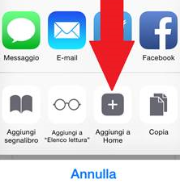
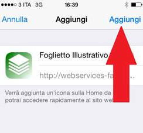

Per installare l'applicazione su iPhone®:
-
Premere il pulsante che si trova nel menu in basso come indicato dalla freccia in figura

-
Premere il pulsante Aggiungi a home che compare in basso come indicato

-
Premere il pulsante Aggiungi in alto a sinistra

-
Verificare La presenza dell'icona Foglio Illustrativo sulla home dell'iPhone® e cliccare sopra per aprire il sito